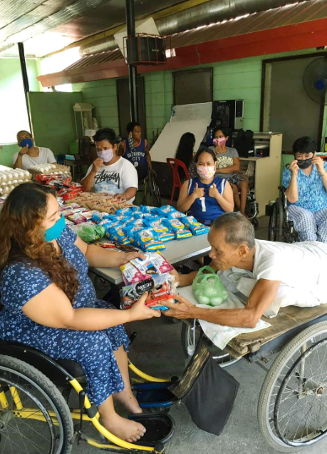
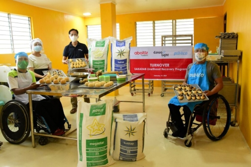
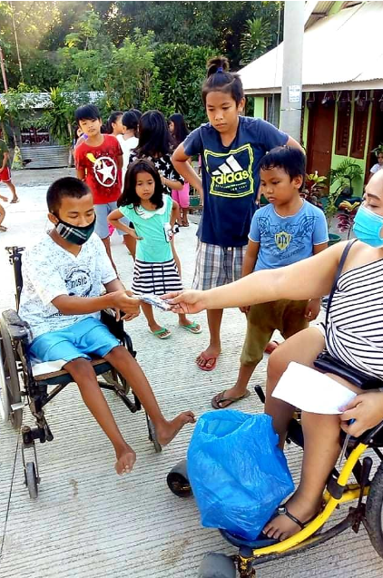

Background and Significance of the study
"Hope For Sakadab"

ㅤㅤThe Background -
ㅤOur project's primary emphasis is SADAKAB's financial position. In a recent interview, the institution stated that money is their primary issue.
ㅤThis implies that they are having difficulty making payments and purchasing supplies for their community. The project's purpose is to advertise
ㅤand create a donation website for SAKADAB. This will allow the institution to collect funds for supplies and expenses, as well as allow the
ㅤcommunity to expand across the country. We may be able to assist SAKADAB with its challenges with advertising and establishing favorable income
ㅤfor the community; by doing so, the project will be able to successfully assist SADAKAB as a whole. To assist SAKADAB in surviving and succeeding
ㅤas an Institute, its obstacles must be addressed.
ㅤㅤProblem Identification
ㅤThe problem that we are facing is discrimination of disabled people, and financial problems. We can address these problems by giving the SAKADAB
ㅤfinancial aid like by offering donations for the SAKADAB, and telling people reasons why it's unreasonable and unright to discriminate and bully a
ㅤdisabled person. This proposed solutions would be effective since for the first solutions we are financially aiding the SAKADAB, since if they are in need
ㅤof financial aid, we can provide them financial aid, and for the other solution, it would give an explanation to the people about the struggle of disabled
ㅤpeople, and they would given an reason why they should stop discriminating disabled people. The proposed solution is better than the alternative because
ㅤit is the best solution for the given problem. The thing it will take in order to do this solutions for the stated problem is by, it will need the support
ㅤof the people for the financial aid, since one group in general won’t be enough, and for the second solution it will take the confidence of a person,
ㅤsince some people are not comfortable talking to many people.

ㅤㅤProposed intervention -
ㅤWe students must create posters explaining why it is important to respect everyone, especially those who are impaired, as stated in the Executive Summary
ㅤTherefore, the items we'll need to make our posters are some scissors, A1-size paper, coloring supplies, colored papers, and finally some glue.
ㅤNot only would these resources be expensive, but they will all only cost 181 PHP. Finally, our audience will support our plan since we must respect
ㅤeveryone, including those who are impaired, and these resources won't be extremely expensive.

ㅤThe Significance -
ㅤOur Project aims to solve financial problems of our Partner Institution, we chose this problem because SAKADAB is also battling their finances but
ㅤsome of their jobs there aren't enough to support their institution especially in time of the pandemic and lockdown. Their materials aren't enough and the
ㅤprices of goods that time went up, so they don’t have the exact money to support a lot. In addition to that, we include in our project to encourage people and
ㅤeducate them in respecting disbled people, instead of discriminating. It is a must to respond with these problems to help disabled people through giving out
ㅤsome donations to solve their financial problems. As a student, we don’t have a lot of money to donate and usually our allowance comes from our parents.
ㅤFor us (students), we can keep our extra money to donate to SAKADAB. We can make posters and use our creativity to inspire and encourage people.
ㅤAsking guidance in making posters about our project is okay. Through asking for help, we can learn many things and apply it in any way. Our project about
ㅤdonating goods and money to SAKADAB, can also be in our fb page plus the posters. We need to ensure that the money will be used to buy materials,
ㅤand other expenses for our Partner Institution. Regarding the problem about discrimination of disabled people, we can prevent this through encouraging and
ㅤeducating young children, old people, and youth. In this generation, a lot of people are bullying, discriminating, and disrespecting disabled people.
ㅤOur target is social media. Since, most of us really use this in our everyday life. As students, we need to make posters about why we need to respect
ㅤeach other, including disabled people. Our project is for everyone. Learning how to respect each other despite their situation right now is also a sign of
ㅤpeace and love. We need to teach everyone, especially young people, the value of respect, love, and giving, to pass it on to the next generation.
ㅤIf this project went up, there is a possibility that other people with a good heart would help to create buildings and homes for the other disabled families.
ㅤWith this, we can make a better and peaceful world.